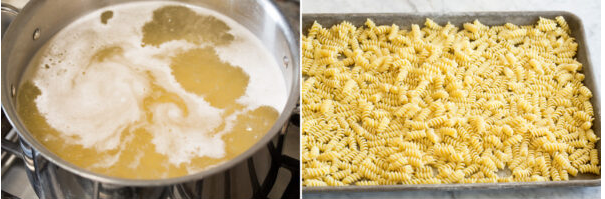
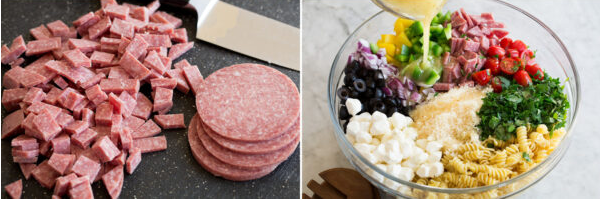
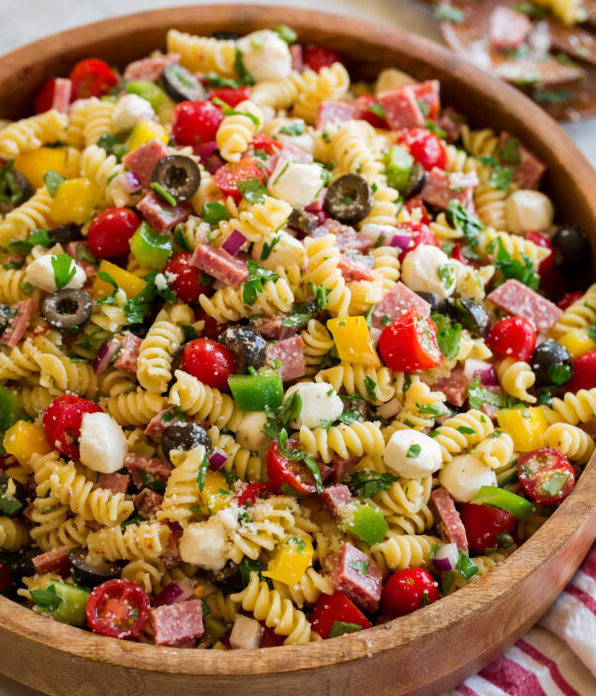
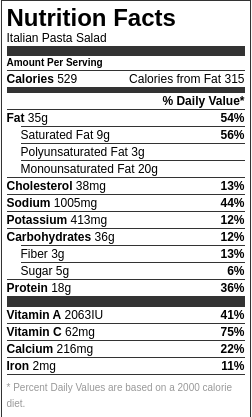

Italian Cold Pasts Salad
This is my favorite pasta salad its so full of flavor and vibrant in color. This salad stores in the refridgerator for several days and only gets better with time, just don't forget to stir before each meal! And it only takes 30 minutes!
Ingredients
1 6oz. Can Black Olives sliced NOT crushed
2 Cups Chopped Bell Peppers, One Orange, One Green
8oz. Fresh Mozzarella Pearls Cut in Fourths
Italian Dressing (preferably olive garden)
Instructions
Boil & Cool Pasta
Cook pasta according to directions on package, but just under al dente about 6 minutes. Add pasta to colander and rince under cold water to stop cooking. The pasta will take on some of the dressing so if cooked too long it will end up soggy.

Prepare pasta salad ingredients
While pasta is cooking and cooling chop all youre ingredients, chop everything into small pieces you want a bite of everything with each spoonful.

Add all the ingredients
Add all the chopped vegetables, Cheese, and Meat to a large glass bowl that could fit into a refridgerator. Add to taste your italian dressing, and spices. Next add your cooled noodles.
Toss salad
Toss together all ingredients, tasting as you go, the more you make this dish the more you can change bits and pieces addding more or less of certain ingredients.
Enjoy or Chill
It can be served right away or for a colder, more refreshing pasta salad, chill for 1-2 hours.

Finally you can store this salad in an airtight container for up to 3 days
This pasta salad is great for get togethers or just an easy way to get in healthy fats and your daily vegetables, also could be great for meal prepping
